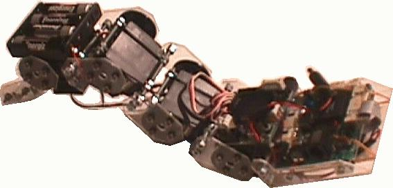
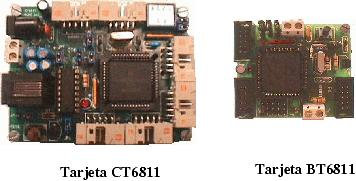
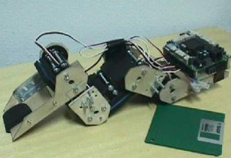
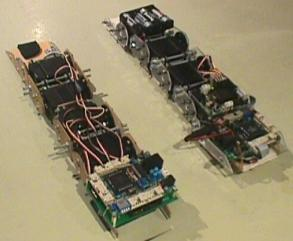

| CUBE: EL GUSANO ROBOT (V.2.0) |
| [Introducción] | [Autores] | [Licencia] | [Mecónica] | [Electrónica] | [Control I] | [Control II] | [Historia] | [Video] | [Download] | [Links] | [Noticias] | [Créditos] |

Este es el trabajo que realizó el autor como proyecto fin de carrera, en la ETSI de Telecomunicación de la UPM. Las dos preguntas fundamentales que motivaron su realización fueron las siguientes:
En este proyecto se ha realizado lo siguiente:
El gusano está basado en módulos iguales, que se interconectan para formar un gusano de cualquier logitud. CUBE 2.0 tiene solo 4 módulos. Cada módulo tiene un servo del tipo Futaba 3003, con un doble eje.
Para el control del robot se ha utilizado la red de microcontroladores desarrollada por Andrés Prieto-Moreno, basada en las tarjetas CT6811 y BT6811. Como CUBE-2.0 solo tiene 4 servos, solo es necesario utilizar una CT6811 y una BT6811, sin embargo es muy facilmente ampliable a un número mayor: solo hay que añadir más tarjetas BT6811 a la red.

El posicionamiento de los servos lo hace la tarjeta BT6811 (Nodo esclavo) que se conecta a la CT6811 (Nodo maestro) a través del SPI. En este nodo se ejecuta un servidor que recibe comandos por el puerto serie y los re-envía por el SPI para posicionar los servos.
Mediante el programa cube-fisico, se pueden posicionar los diferentes servos, a través de una interfaz gráfica sencilla, y es posible generar secuencias de movimiento manuales.
A este nivel de control, los servos se mueven desde aplicaciones del PC, pero no se soluciona el problema de la coordinación. La geneación manual de secuencias es un proceso lento y complejo. La principal utilidad del programa cube-físico es la de reproducir secuencias (bien generadas manual o automáticamente) y la de mover los servos individualmente para corregir fallos mecánicos y comprobar si los servos funcionan correctamente.
En este nivel de control se resuelve el problema de la coordinación de las articulaciones. Para ello se utiliza un gusano virtual, sobre el que se aplica el modelo de movimiento basado en la propagación de ondas sinusoidales.
Mediante el programa cube-virtual se generan las secuencias de movimiento, a partir de los parámetros de la onda sinusoidal que queremos que recorra el gusano. Las secuencias se almacenan en un fichero para luego ser reproducidas usando el programa cube-fisico.

La primera versión del gusano, CUBE 1.0, estaba realizada con piezas de madera y la estructura, aunque se parece bastante a la final, no era modular. Solo tenía 4 servos y no era ampliable. Para la electrónica solo se usaba la Tarjeta CT6811, por lo que tampoco era ampliable.
 |
 |
La segunda versión, CUBE 2.0, es la que se describe en esta página. El proyecto se terminó en abril del 2001.
En este vídeo, grabado en el Club de Robática Mecatrónica de la UAM, se puede ver una secuencia de movimiento de CUBE 2.0.
La memoria del proyecto se ha fragmentado en 4 ficheros, disponibles en la sección de Download, para que sea más fácil su descarga. El proyecto se terminó en Abril del 2001, pero la fecha que aparece en la portada es la de Feb del 2003 (Fecha en la que se ha publicado en esta web)
Para la escritura del proyecto se ha empleado Lyx (1.1), y las figuras se han realizado con XFIG, bajo el sistema operativo GNU/LINUX.
| SOFTWARE |
| futA.asm (12KB) | Programa servidor para la tarjeta BT6811. Fuentes |
| futA.s19 (693 Bytes) | Programa servidor para la tarjeta BT6811. Ejecutable |
| maestro_ram.asm (3KB) | Programa para cargar en la CT6811. Fuentes |
| maestro_ram.s19 (236Bytes) | Programa para cargar en la CT6811. Ejecutable |
| cube_fisico-2.0.1.tgz (22KB) | Programa cube-fisico para reproducir secuencias y mover los servos. Ejecutable |
| cube_fisico-src-2.0.1.tgz (29KB) | Programa cube-fisico. Fuentes |
| cube_virtual-1.4.1.tgz (30KB) | Programa cube-virtual para generar secuencias de movimiento. Ejecutable |
| cube_virtual-src-1.4.1.tgz (40KB) | Programa cube-virtual. Fuentes |
| PLANOS |
| estrucutra-cube.pdf (7KB) | Estrucutra general del gusano |
| base_bt6811.pdf (7KB) | Pieza base para la BT6811 |
| base_futaba.pdf (4KB) | Pieza base del futaba, unida al servo con velcro. (Opcional) |
| base_cabeza.pdf (6KB) | Pieza base de la cabeza |
| base_cola.pdf (7KB) | Pieza base de la cola |
| piezaA.pdf (7KB) | Pieza de tipo A |
| piezaB.pdf (7KB) | Pieza de tipo B |
| piezaC.pdf (6KB) | Pieza de tipo C |
| planos-cube-2-0-src.tgz (7KB) | Fuentes de todos los planos anteriores, para XFIG |
| DOCUMENTACIÓN |
| cube_1.pdf (555 KB) | Capítulo 1: Encuadre e introducción |
| cube_2.pdf (500 KB) | Parte I: Teoría de gusanos (Capítulos del 2 al 6) |
| cube_3.pdf (1 MB) | Parte II: Implementación. Mecónica, electrónica y software (Capítulos del 7 al 11) |
| cube_4.pdf (614KB) | Apéndices, fotos, bibliografía y listados |